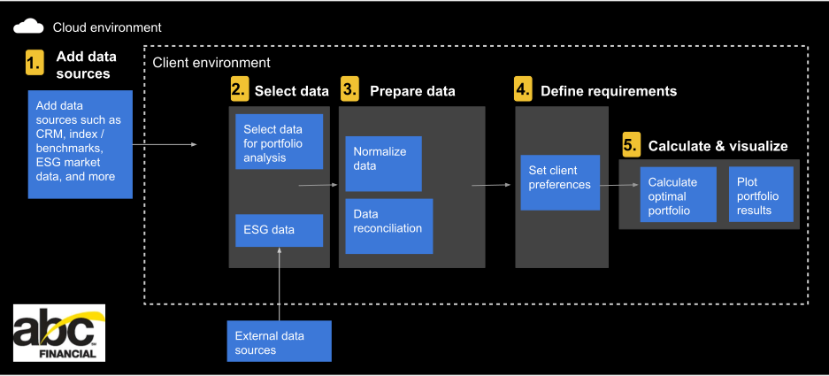

DIY Diversification
BBH Interview Challenge
ABC Financial Services
Today’s clients expect more than one-size-fits-all investment portfolios. They seek tailored solutions that reflect their individual values, financial goals, and lifestyle choices. From targeting a specific retirement age to prioritizing tax efficiency, advisors are increasingly challenged to deliver highly customized options quickly and on demand.
ABC Financial Services is proud to announce the launch of a new portfolio optimization and personalization system that significantly improves our client’s investment experience. Using proprietary algorithms and big data we can deliver tailored investment strategies at lower costs, enhancing operational efficiency and scalability.
Traditional portfolio construction methods can be time-consuming and labor-intensive, especially when you’re juggling multiple client demands at once. ABC's system will dynamically construct personalized portfolios based on a client’s financial goals, risk tolerance, and investment horizons.
Key features:
- Adaptability: Respond to market conditions and individual client changes in real time.
- Data Reconciliation: Establish a "single source of truth" by combining multiple data sources and reduce the risk of conflicting information and errors.
- Personalization: Dynamically construct and adjust portfolios based on client preferences (e.g. goals, risk tolerance, investment horizon, etc.).
- Scalability: Support a large number of clients and portfolios without performance degradation.
Success Metrics:
| Metric | Target |
|---|---|
| Portfolio performance | Outperform benchmark by 5-10% |
| Data reconciliation accuracy | < 1% error rate |
| System uptime | 99.99% |
| Client onboarding time | < 24 hours |
| Client satisfaction (NPS) | > 90 |
Every investment is judged on how well it does not only on an absolute basis, but also relative to a benchmark. In addition to generating profits, the goal of any investment is to beat the benchmark. Defining meaningful benchmarks means avoiding biases such as hindsight bias or recency bias.
Data reconciliation is the unglamorous yet essential process of making sure your numbers add up, your data sources align, and your systems agree with each other. The process usually looks like this:
- Extract the relevant data from wherever it resides: a CRM system, your ERP software, diverse financial data, maybe even that one Excel sheet still in use.
- Now that you’ve wrangled your data, load it somewhere you can work with it, such as a database or a dedicated reconciliation tool like OpenRefine.
- Actually compare the data by:
- Defining Matching Criteria: What is being compared: IDs? Dates? Dollar amounts? Be explicit about what counts as a “match.”
- Finding the Discrepancies: Identify gaps, mismatches, or other data validation errors.
- Fixing the Discrepancies: Is the discrepancy a typo? A timing issue? Or did someone accidentally delete half your data? Discover the root cause and fix it.
- Validating the Results: Finally, make sure everything lines up like it’s supposed to.

Any success metrics must include input from the client. NPS (Net Promoter Score) is a loyalty metric that measures how likely a client is to recommend a company, product, or service to others, while CSAT (Customer Satisfaction Score) focuses on satisfaction with a specific interaction or product. NPS provides a broader view of long-term customer loyalty, while CSAT offers insights into immediate satisfaction levels, such as after an interaction.
Architecture Diagram
┌───────────────────────────────────────────────────────────────────────────────┐
│ │
│ ABC Financial Portfolio Optimization System │
│ │
└───────────────────────────────────────────────────────────────────────────────┘
┌─────────────┐ ┌─────────────┐ ┌─────────────────┐ ┌─────────────────┐
│ │ │ │ │ │ │ │
│ Client UI │◄───┤ API Layer │◄───┤ Portfolio Engine│◄───┤ Data Pipeline │
│ │ │ │ │ │ │ │
└─────────────┘ └─────────────┘ └─────────────────┘ └─────────────────┘
▲ ▲ ▲ ▲
│ │ │ │
┌──────┴───────┐ ┌───────┴───────┐ ┌──────┴───────┐ ┌──────┴────────┐
│ │ │ │ │ │ │ │
│ Client DB │ │ Market Data │ │ Risk Models │ │ Data Sources │
│ │ │ Feeds │ │ & Analytics │ │ (CRM, ERP, │
└──────────────┘ └───────────────┘ └──────────────┘ │ etc.) │
└───────────────┘
Key Components:
- Client UI: Dashboard for clients and advisors. This is where we display a client's portfolio, set preferences, and toggle data sources.
- API Layer: RESTful APIs for integration with client systems. Typically uses lightweight data formats like JSON (JavaScript Object Notation) or XML (Extensible Markup Language) for data exchange, enhancing interoperability.
- Portfolio Engine: Core logic for portfolio construction and optimization.
- Data Pipeline: ETL, data reconciliation, and normalization. This layer prepares data for use, aggregating and comparing multiple data sources.
- Data Sources: CRM, ERP, market data feeds, HRIS / payroll data, bookings data, etc.
Workflow diagram
Portfolio optimization functional workflow
1. Add different datasets such as stock market information, proprietary customer data (CRM), business planning data (ERP), and Amazon Data Exchange (ADX).
2. In a client environment, such as Amazon FinSpace, first we load our datasets, then load any third-party datasets (e.g. Yahoo! Finance). Suppose that two datasets contain ESG scores for the same subset of companies. These ESG scores are calculated by two different data providers with different criteria, so they can’t be directly compared or combined. We execute a normalization of these scores, so that we can later combine them.
Personalization option: To execute the normalization step, we must define arbitrary thresholds/coefficients. You can use default values, or change them to fit client preferences.
3. Once we have selected the relevant information from our different sources, we combine all of these datasets into a single working dataset.
- Extract financial data from both systems for the same time period.
- Load it into your data warehouse or reconciliation tool.
- Define your matching criteria, like transaction IDs, dates, and amounts.
- Run the comparison and observe the mismatches. Maybe some records are missing in one system, or the totals just don’t add up.
- Dig in and fix the issues, such as data mismatches, incompatible data formats, or missing data.
- Validate the final dataset to make sure it’s valid for client reports and dashboards.
4. At this step, we set the requirements that will define our client's portfolio. Specifically, we set the minimum and maximum percentage allowed for each stock or asset and the minimum expected portfolio return we require to calculate and score the equal weighted portfolio.
Personalization option: Each client can configure these preferences to fit their needs and explore different scenarios.
5. We use the data we’ve prepared and the rules we’ve set to calculate three things:
- Minimum variance portfolio: The mix of investments that has the least amount of risk when considering client preferences.
- Markowitz-style Efficient Frontier: A graph showing all the possible portfolio options that offer the best balance between risk and return—helping investors choose the best option for their risk tolerance.
- Portfolio that maximizes the modified Sharpe ratio: The investment mix that gives the best return for the amount of risk taken, using a special calculation. The Sharpe ratio compares how well an equity investment performs to the rate of return on a risk-free investment.
Build-vs-Buy
When creating software, building vs buying is a classic dilemma. The answer will always depend on your unique situation, client needs, market fit, user base, and more.
On one hand, off-the-shelf software is quick to deploy, robustly tested, and usually fully supported. On the other hand, a custom-built solution gives you full control and is designed for your workflows, client your needs, and your pace.
| Module | Build/Buy | Rationale |
|---|---|---|
| Client UI | Build | Use a low-code development platform (e.g., Peakboard) for rapid development. |
| API Layer | Build | Craft custom APIs for unique business logic and integration requirements. |
| Portfolio Engine | Build | Core IP; competitive advantage; requires proprietary algorithms. |
| Data Pipeline | Buy + Customize | Use a data integration platform (e.g., Informatica, Talend) for ETL. |
| Risk Models | Buy + Customize | Leverage third-party risk models (e.g., Bloomberg, MSCI) and customize. |
| Data Sources | Integrate | Use existing CRM/ERP systems; buy access to external financial data (e.g.,FactSet) and build adapters as needed. |
A Portfolio Engine is built to manage, track, and analyze investments. It provides a centralized platform for investors and financial institutions to organize, monitor, and optimize their portfolios, offering features like performance tracking, risk assessment, and reporting. Building one streamlines investment processes, enhances decision-making, and improves overall portfolio management capabilities.
Technical Analysis: Initial Questions
| Question | Why? |
|---|---|
| What are the primary data sources and their formats? | To design the data pipeline and reconciliation logic. |
| What is the expected volume and velocity of data? | To size infrastructure and ensure real-time processing. |
| What are the regulatory and compliance requirements? | To ensure the system meets legal and audit standards. |
| What are the key portfolio optimization algorithms to be used? | To evaluate computational complexity and performance. |
| How will the system handle client profile changes? | To design the adaptability and notification mechanisms. |
| What are the integration points with existing systems? | To plan API development and data mapping. |
| What are the disaster recovery and backup requirements? | To design for resilience and data integrity. |
| How will the system be tested and validated? | To ensure accuracy, performance, and compliance. |
The Competitive Landscape
Existing companies & similar technology
| Company | Product/Solution | Key Features |
|---|---|---|
| BlackRock Aladdin | Aladdin Wealth Management | Risk analytics, portfolio construction, and trading tools. |
| Morningstar | Morningstar Direct | Personalized investment advice and portfolio management. |
| Bloomberg | Bloomberg Portfolio Tools | Market data integration, risk analytics, and portfolio optimization. |
| Envestnet | Envestnet Tamarac | Unified managed accounts, rebalancing, and reporting. |
| Additiv | DFS (Digital Finance Suite) | Modular wealth management platform with AI-driven personalization. |
Competitive analysis
- BlackRock Aladdin: Emphasizes risk management, scalability, and institutional-grade analytics.
- Morningstar: Focuses on independent research, transparency, and advisor tools.
- Bloomberg: Highlights real-time data, integration, and global market coverage.
- Envestnet: Markets as a unified, open-architecture platform for wealth management advisors.
- Additiv: Positions as a digital-first, modular, and AI-powered solution.
How ABC’s Solution Can Compete
| Differentiator | ABC’s Advantage |
|---|---|
| Dynamic Personalization | Real-time adaptation to client changes and market conditions. |
| Data Reconciliation | Advanced ETL and error resolution for inconsistent data sources. |
| Explainability | Clear, auditable reasoning for portfolio recommendations. |
| Scalability | Cloud-native architecture for high-volume, low-latency processing. |
| Integration Flexibility | Open APIs and adaptors for seamless integration with client systems. |
Next Steps
- Stakeholder Interviews: Validate assumptions and gather detailed requirements.
- Proof of Concept: Build a minimal prototype for the portfolio engine and data pipeline.
- Vendor Evaluation: Assess third-party tools for data integration and risk modeling.
- Regulatory Review: Engage compliance teams early to ensure alignment.